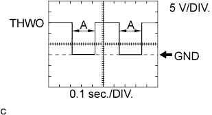
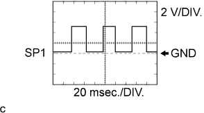
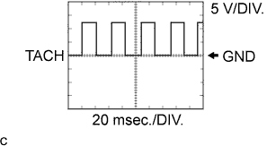
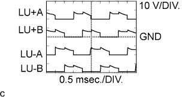
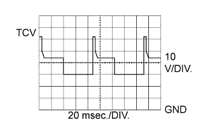
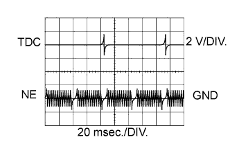
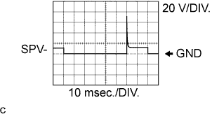

СИСТЕМА ECD > КОНТАКТЫ ECM |
| Terminal No. (Symbol) | Wiring Color | Terminal Description | Condition | Specified Condition |
| G61-1 (BATT) - C101-14 (E1) | L - BR | Battery (for measuring the battery voltage and for ECM memory) | Always | 11 to 14 V |
| G61-2 (SREL) - C101-13 (E01) | R - W-B | GLOW relay | Cranking | 11 to 14 V |
| G61-2 (SREL) - C101-13 (E01) | R - W-B | GLOW relay | Idling (engine started and 600 sec. have passed) | 0 to 1.5 V |
| G61-3 (MREL) - C101-14 (E1) | V - BR | MAIN relay | Ignition switch ON | 11 to 14 V |
| G61-3 (MREL) - C101-14 (E1) | V - BR | MAIN relay | Ignition switch off (2 sec. after ignition switch off) | 0 to 1.5 V |
| G61-4 (TC) - C101-14 (E1) | V - BR | Terminal TC of DLC3 | Ignition switch ON | 11 to 14 V |
| G61-5 (W) - C101-14 (E1) | V - BR | MIL | MIL illuminated | 0 to 3 V |
| G61-5 (W) - C101-14 (E1) | V - BR | MIL | MIL not illuminated | 11 to 14 V |
| G61-8 (THWO) - C101-14 (E1) | L - BR | Combination meter assembly | Ignition switch ON | Pulse generation (See waveform 1) |
| G61-9 (SPD) - C101-14 (E1) | R - BR | Speed signal from combination meter assembly | Ignition switch ON, driving wheel rotating slowly | Pulse generation (See waveform 2) |
| G61-11 (STA) - C101-14 (E1) | W - BR | Starter signal | Cranking | 6 V or more |
| G61-12 (+B) - C101-14 (E1) | W - BR | Power source of ECM | Ignition switch ON | 11 to 14 V |
| G61-14 (IGSW) - C101-14 (E1) | W - BR | Ignition switch | Ignition switch ON | 11 to 14 V |
| G61-15 (SIL) - C101-14 (E1) | W - BR | Terminal SIL of DLC3 | Intelligent tester connected to DLC3 | Pulse generation |
| G61-19 (STP) - C101-14 (E1) | V - BR | Stop light switch | Brake pedal depressed | 11 to 14 V |
| G61-19 (STP) - C101-14 (E1) | V - BR | Stop light switch | Brake pedal released | Below 1.5 V |
| G62-1 (GIND) - C101-14 (E1) | R - BR | Glow indicator light | Glow indicator light lights up | 0 to 3 V |
| G62-1 (GIND) - C101-14 (E1) | R - BR | Glow indicator light | Glow indicator light does not light up | 11 to 14 V |
| G62-2 (AC1) - C101-14 (E1) | LG - BR | A/C amplifier | A/C switch on (magnetic clutch on) | Below 1.5 V |
| G62-2 (AC1) - C101-14 (E1) | LG - BR | A/C amplifier | A/C switch off | 7.5 to 14 V |
| G62-8 (ACT) - C101-14 (E1) | R - BR | A/C amplifier | Ignition switch ON | 11 to 14 V |
| G62-8 (ACT) - C101-14 (E1) | R - BR | A/C amplifier | A/C cut performed (driving below 30 km/h (18.6 mph), accelerator pedal fully depressed for 5 sec.) | 0 to 3 V |
| G62-5 (VPA) - G62-4 (EPA) | L - P | Accelerator pedal position sensor (for engine control) | Ignition switch ON, accelerator pedal released | 0.5 to 1.1 V |
| G62-5 (VPA) - G62-4 (EPA) | L - P | Accelerator pedal position sensor (for engine control) | Ignition switch ON, accelerator pedal depressed | 2.6 to 4.5 V |
| G62-12 (VPA2) - G62-4 (EPA) | GR - P | Accelerator pedal position sensor (for sensor malfunction detection) | Ignition switch ON, accelerator pedal released | 1.2 to 2.0 V |
| G62-12 (VPA2) - G62-4 (EPA) | GR - P | Accelerator pedal position sensor (for sensor malfunction detection) | Ignition switch ON, accelerator pedal depressed | 3.4 to 5.3 V |
| G62-6 (VCPA) - G62-4 (EPA) | LG - P | Power source of accelerator pedal position sensor (for VPA) | Ignition switch ON | 4.5 to 5.5 V |
| G62-7 (TACH) - C101-14 (E1) | P - BR | Engine speed sensor | Idling | Pulse generation (See waveform 3) |
| G62-11 (ST1-) - C101-14 (E1) | B - BR | Stop light switch | Brake pedal depressed | Below 1.5 V |
| G62-11 (ST1-) - C101-14 (E1) | B - BR | Stop light switch | Brake pedal released | 11 to 14 V |
| C102-1 (VC) - C102-9 (E2) | R-W - BR | Power source of sensor (specific voltage) | Ignition switch ON | 4.75 to 5.25 V |
| C102-2 (PIM) - C102-9 (E2) | L-B - BR | Manifold absolute pressure sensor | 60 kPa (450 mmHg, 17.7 in.Hg) vacuum applied | 0.2 to 0.8 V |
| C102-2 (PIM) - C102-9 (E2) | L-B - BR | Manifold absolute pressure sensor | 207 kPa (1550 mmHg, 61.0 in.Hg) vacuum applied | 4.2 to 4.8 V |
| C102-3 (THA) - C102-9 (E2) | B-L - BR | Intake air temperature sensor | Idling, air intake temp. 0°C (32°F) to 80°C (176°F) | 0.5 to 3.4 V |
| C102-4 (THW) - C102-9 (E2) | R-L - BR | Engine coolant temperature sensor | Idling, engine coolant temp. 60°C (140°F) to 120°C (248°F) | 0.2 to 1.0 V |
| C102-5 (THF) - C102-9 (E2) | G-B - BR | Fuel temperature sensor | Ignition switch ON (engine cold) | 0.5 to 3.4 V |
| C102-6 (DATA) - C101-14 (E1) | Y - BR | Injection pump | Within 0.5 sec. after ignition switch ON | Pulse generation |
| C102-14 (CLK) - C101-14 (E1) | L - BR | Injection pump | Within 0.5 sec. after ignition switch ON | Pulse generation |
| C102-15 (THOP) - C101-14 (E1) | GR - BR | Throttle open switch | Idling (engine warmed up) | 11 to 14 V |
| C102-15 (THOP) - C101-14 (E1) | GR - BR | Throttle open switch | Ignition switch ON (once within 5 sec.) | 0 to 3 V |
| C101-7 (LU-B) - C101-13 (E01) | L-Y - W-B | Throttle control motor (intake shutter) | Racing (engine warmed up) | Pulse generation (See waveform 4) |
| C101-8 (LU+B) - C101-13 (E01) | L-R - W-B | Throttle control motor (intake shutter) | Racing (engine warmed up) | Pulse generation (See waveform 4) |
| C101-9 (LU-A) - C101-13 (E01) | L-W - W-B | Throttle control motor (intake shutter) | Racing (engine warmed up) | Pulse generation (See waveform 4) |
| C101-10 (LU+A) - C101-13 (E01) | L-B - W-B | Throttle control motor (intake shutter) | Racing (engine warmed up) | Pulse generation (See waveform 4) |
| C101-11 (TCV) - C101-13 (E01) | R-W - W-B | Timing control valve | Ignition switch ON | 11 to 14 V |
| C101-11 (TCV) - C101-13 (E01) | R-W - W-B | Timing control valve | Idling | Pulse generation (See waveform 5) |
| C101-12 (SPV+) - C101-14 (E1) | R-L - BR | Spill control valve | Ignition switch ON | 11 to 14 V |
| C101-12 (SPV+) - C101-14 (E1) | R-L - BR | Spill control valve | Idling | Pulse generation |
| C101-25 (SPV-) - C101-14 (E1) | R-Y - BR | Spill control valve | Idling | Pulse generation (See waveform 7) |
| C101-17 (TDC+) - C101-16 (TDC-) | G - R | Crankshaft position sensor | Idling | Pulse generation (See waveform 6) |
| C101-19 (NE+) - C101-18 (NE-) | W - B | Engine speed sensor | Idling | Pulse generation (See waveform 6) |
| Waveform 1 |
|  |
A/C amplifier signal
| Terminal No. (Symbol) | G61-8 (THWO) - C101-14 (E1) |
| Tester Range | 5 V/DIV., 0.1 sec./DIV. |
| Condition | Idling |
| Waveform 2 |
|  |
Speed signal
| Terminal No. (Symbol) | G61-9 (SPD) - C101-14 (E1) |
| Tester Range | 2 V/DIV., 20 msec./DIV. |
| Condition | Driving at approx. 20 km/h (12.4 mph) |
| Waveform 3 |
|  |
Engine speed signal
| Terminal No. (Symbol) | G62-7 (TACH) - C101-14 (E1) |
| Tester Range | 5 V/DIV., 20 msec./DIV. |
| Condition | Idling after warming up |
| Waveform 4 |
|  |
Throttle control motor signals
| Terminal No. (Symbol) | C101-10 (LU+A) - C101-13 (E01) C101-8 (LU+B) - C101-13 (E01) C101-9 (LU-A) - C101-13 (E01) C101-7 (LU-B) - C101-13 (E01) |
| Tester Range | 10 V/DIV., 0.5 msec./DIV. |
| Condition | Engine racing |
| Waveform 5 |
|  |
Timing control value signal
| Terminal No. (Symbol) | C101-11 (TCV) - C101-13 (E01) |
| Tester Range | 10 V/DIV., 10 msec./DIV. |
| Condition | During idling |
| Waveform 6 |
|  |
Crankshaft position sensor and engine speed sensor signals
| Terminal No. (Symbol) | C101-17 (TDC+) - C101-16 (TDC-) C101-19 (NE+) - C101-18 (NE-) |
| Tester Range | 2 V/DIV., 20 msec./DIV. |
| Condition | During idling |
| Waveform 7 |
|  |
Spill control valve signal
| Terminal No. (Symbol) | C101-25 (SPV-) - C101-14 (E1) |
| Tester Range | 20 V/DIV., 10 msec./DIV. |
| Condition | During idling |